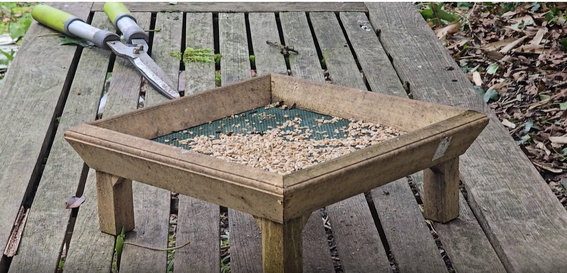
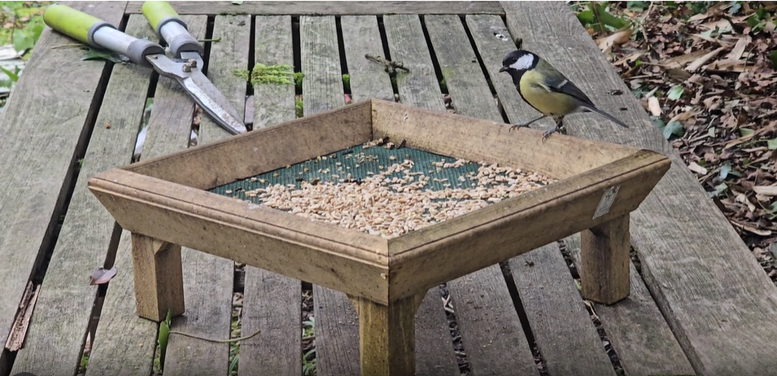
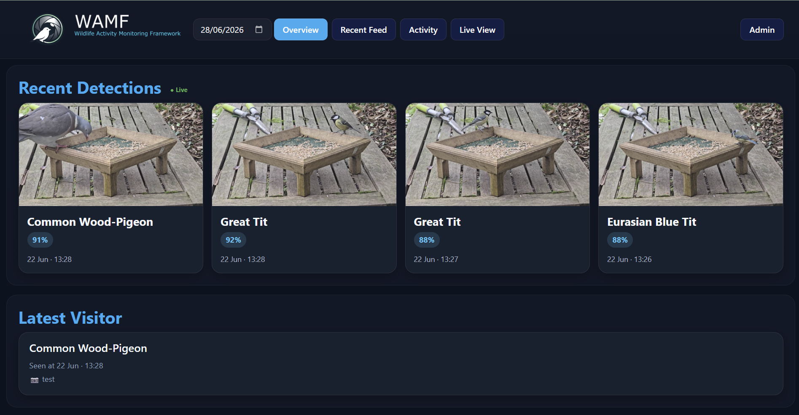
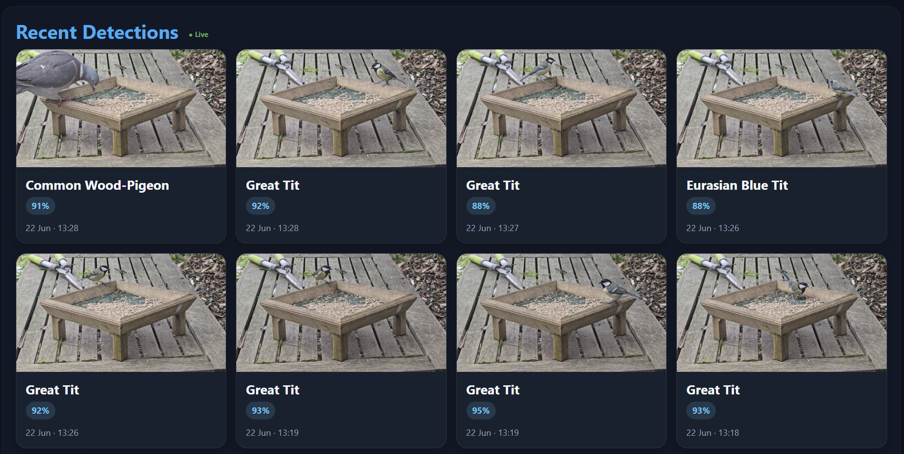
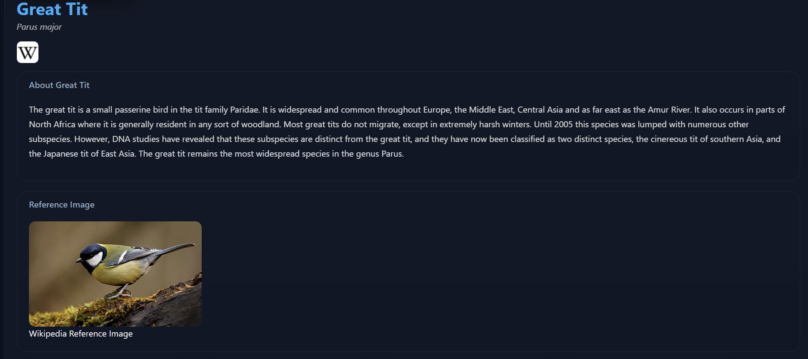

Designed Around Frigate
WAMF uses Frigate as its event source, building on proven object detection to provide bird identification, observation management and a dedicated wildlife interface.

Open-source wildlife monitoring platform
WAMF extends Frigate with AI-powered bird identification, automatic media archiving and a modern web interface for exploring wildlife observations.


Features
WAMF uses Frigate as its event source, building on proven object detection to provide bird identification, observation management and a dedicated wildlife interface.
Store observations, media, timestamps and rich species metadata in a structured archive.
Access detections, health information and statistics through a simple REST API for dashboards, Home Assistant and custom applications.
Clean up old media and keep storage from growing into a digital bramble patch.
From detection to observation
Frigate provides reliable object detection, event recording and camera management, forming the foundation that WAMF builds upon.
WAMF classifies wildlife using AI, enriching every detection with species information and observation metadata.
Observations, media and statistics are stored in a structured archive, making it easy to review wildlife activity over time.
Explore WAMF

Keep track of recent detections, latest visitors and system activity from a single overview.

Browse detections with thumbnails, confidence scores, timestamps and archived media.

Enrich observations with scientific names, reference material and species information beyond simple object detection.
Why WAMF?
WAMF extends Frigate with tools built specifically for wildlife monitoring, turning camera detections into useful observations.
Automatically identify bird species from Frigate detections with AI confidence scoring.
Every observation is enriched with scientific names, reference imagery and species information.
Enhance your existing Frigate installation without replacing the platform you already trust.
Keep ownership of your observations, media and wildlife data.
MIT licensed, community driven and designed to grow with the project.
Designed specifically for feeders, nest boxes and wildlife cameras instead of general security monitoring.